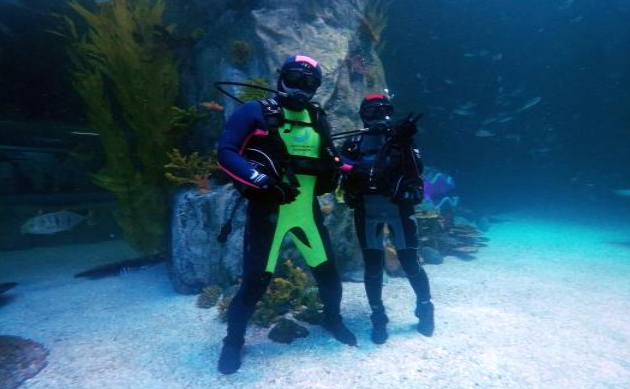

diving

♠ 프로그램 소개 ♠
국내최대 규모 25m 메인수조 속에서 펼쳐지는 바다 속 풍경을 담은 씨워킹, 씨라이딩, 스노쿨링 체험!
다양한 바다생물들이 눈앞에서 펼쳐지는 롯데월드 아쿠아리움에서 특별한 추억을 남겨 보세요!
수영을 못해도 잠수를 못해도 전문 강사가 안전하게 아름다운 수중세계를 만끽하게 해드립니다.
♠ 프로그램 상세내용 ♠
[씨워킹] *대상: 만 12세 이상, 스킨스쿠버 수료증 소지자
- 소요시간 약 90분(교육시간 포함)
- 안전수칙 및 프로그램 교육
- 다이빙 수트 착의
- 입수풀 사전 교육 및 메인수조 입수 체험
- 샤워 및 마무리
[씨라이딩] *대상: 만 10세 이상 / 최소 2인 이상 진행
-소요시간 약 90분(교육시간 포함)
- 안전수칙 및 프로그램 교육
- 다이빙 수트 착의
- 입수풀 사전 교육 및 메인수조 입수 체험
- 샤워 및 마무리
[펀다이빙] *대상 : 스킨스쿠버 중급 수료자 이상(만 18세 이상) / 2인신청
- 소요시간 : 약 90분~100분(잠수시간 약 20분)
- 안전 수칙 및 프로그램 교육
- 다이빙 수트 착의
- 보조풀 사전 교육 및 메인수조 입수 체험
- 샤워 및 마무리
***수중 이벤트 프로그램***
- ♥ 프로포즈(웨딩) 커플다이빙 ♥: 특별한 수중 프로포즈
- 생일 다이빙
※ 수중 이벤트 프로그램은 별도 문의주세요.
♠ 요금안내 ♠
[씨워킹] 105,000원(입장료 포함) / 90,000원(마린프렌즈)
[씨라이딩] 85,000원(입장료 포함) / 70,000원(마린프렌즈)
[펀다이빙] 95,000원(입장료 포함) / 80,000원(마린프렌즈)
※ 1인당 요금이며, 입장료 포함 금액입니다.
※ 프로포즈(웨딩) 커플 다이빙은 별도 문의 바랍니다.